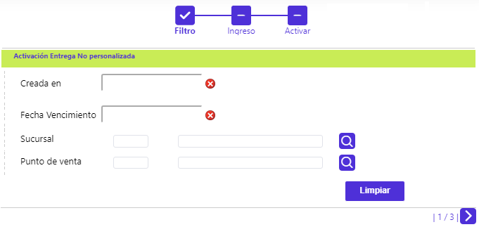
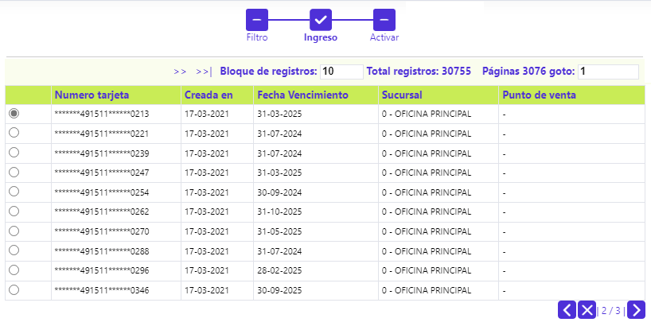

Activación Entrega No personalizada
Mediante esta función, se habilita la selección de aquellos plásticos No Personalizados que se encuentran disponibles para ser entregados a los clientes, surtiendo en ese momento la etapa de Activación.
Al invocar la opción, el usuario se encuentra con un wizard de tres pasos, el primero, corresponde a un filtro, que permite ubicar la(s) tarjeta(s) que se desea consultar para gestionar su entrega y marcación de Activa.

Descripción de campos
|
Creada en |
Campo que, mediante la funcionalidad de un calendario, permite indicar la fecha en la que se crearon las tarjetas no personalizadas a consultar para entregar y activar. |
|
Fecha Vencimiento |
Campo que, mediante la funcionalidad de un calendario, permite indicar la fecha en la que expirarán o vencerán las tarjetas no personalizadas a consultar para entregar y activar. |
|
Sucursal |
Campo con lista de valores que permite seleccionar la sucursal en la que se gestionó la solicitud de las tarjetas no personalizadas que se desean consultar y activar. |
|
Punto de venta |
Campo con lista de valores que permite seleccionar el punto de venta asociado con las tarjetas no personalizadas que se desean consultar y activar. |
Una vez seleccionados los criterios y al desplazarse a la segunda página del wizard, se muestran los registros que cumplen con las condiciones indicadas por el usuario, mostrando para cada uno de ellos: Número de tarjeta (enmascarado), Creada en, Fecha Vencimiento, Sucursal y Punto de venta.

En la tercera página del wizard, se dispone de la funcionalidad para registrar la información del cliente a quien se le asigna una de las tarjetas no personalizadas. Luego de diligenciar la data disponible, mediante el botón de palomita o visto bueno se ordena la activación de la correspondiente tarjeta.

Descripción de campos
|
Tipo de cuenta |
Campo que posee lista de valores tipo combo de la que debe seleccionarse entre: Ahorros o Corriente, el tipo de cuenta de depósitos a la que se vincula la tarjeta no personalizada a entregar y activar. |
|
Número cuenta |
Campo en el que debe registrarse el número de la cuenta de depósitos a la que se vincula la tarjeta no personalizada a entregar y activar. |
|
Moneda |
Campo con lista de valores que permite seleccionar la moneda en la que se denominan los saldos de la cuenta de depósitos a la que se vincula la tarjeta no personalizada a entregar y activar. |
|
Tipo identificación |
Campo con lista de valores tipo combo de la que debe seleccionarse aquel al que corresponda el documento de identificación del cliente al que se le va a entregar la tarjeta no personalizada. |
|
Número identificación |
Campo en el que debe registrarse el dato del número de identificación del cliente al que se le va a entregar la tarjeta no personalizada. |
|
Nombres y Apellidos |
Campos de salida, el sistema los diligencia con la data correspondiente al cliente cuyos tipo y número de ID se ingresó. |
|
Ciclo facturación |
Campo con lista de valores que permite seleccionar el Ciclo de facturación al que se asocia la tarjeta no personalizada a entregar y activar. |